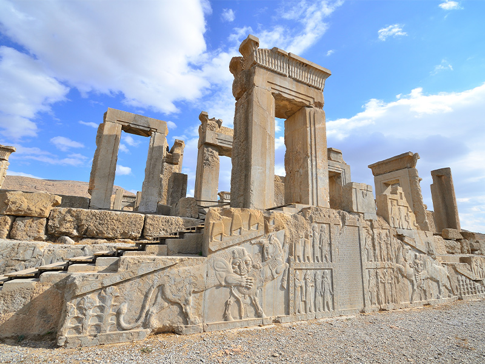
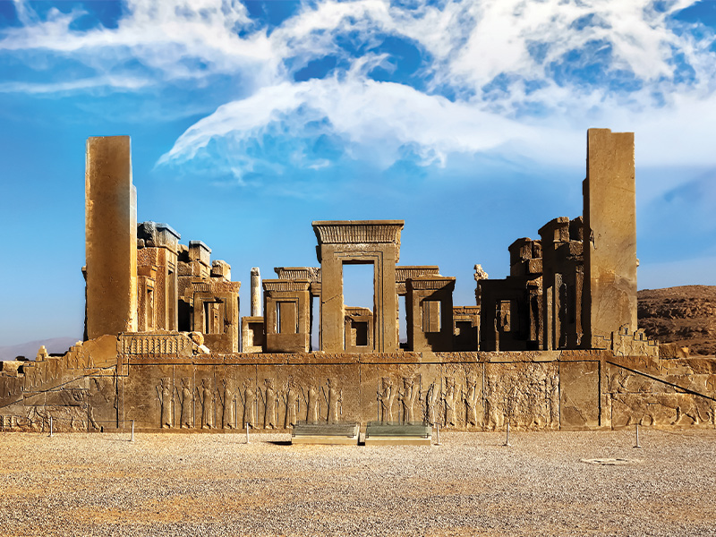

| شیراز ، کلانشهری در ایران و مرکز استان فارس در جنوب کشور است. جمعیت کلانشهر شیراز بر اساس سرشماری سال ۱۴۰۰، بالغ بر ۱٬۹۵۵٬۵۰۰ تن بودهاست که بر این اساس، شیراز پنجمین شهر بزرگ و پرجمعیت ایران و پرجمعیتترین شهر جنوب کشور بهشمار میرود. |  |
|  | تخت جمشید مجموعهای از چند کاخ تو در تو در کنار دشت مرودشت و در کوهپایهٔ کوه رحمت در استان فارس واقع در شهر مرودشت ایران است. در دورههای تاریخی پس از هخامنشیان، به دلیل فراموشی خط و زبان پارسی باستان و ناآشنا بودن سنگ نوشتهها، نام پارسه فراموش شده و مردم نام تخت جمشید (پادشاه پیشدادی) را بر روی کاخ مینهند. تخت جمشید در شهر باستانی پارسه یکی از شهرهای باستانی ایران قرار داشته است که طی سالیان، پیوسته پایتخت تشریفاتی شاهنشاهی هخامنشی بوده است. |